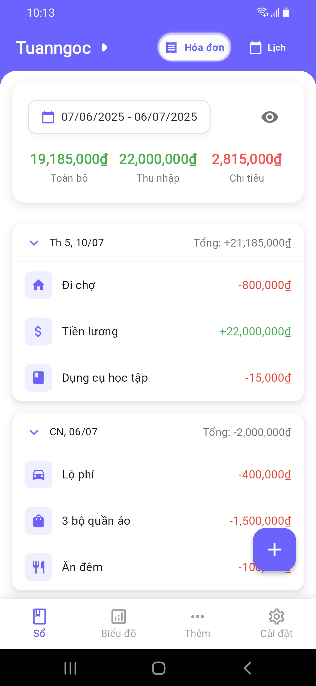
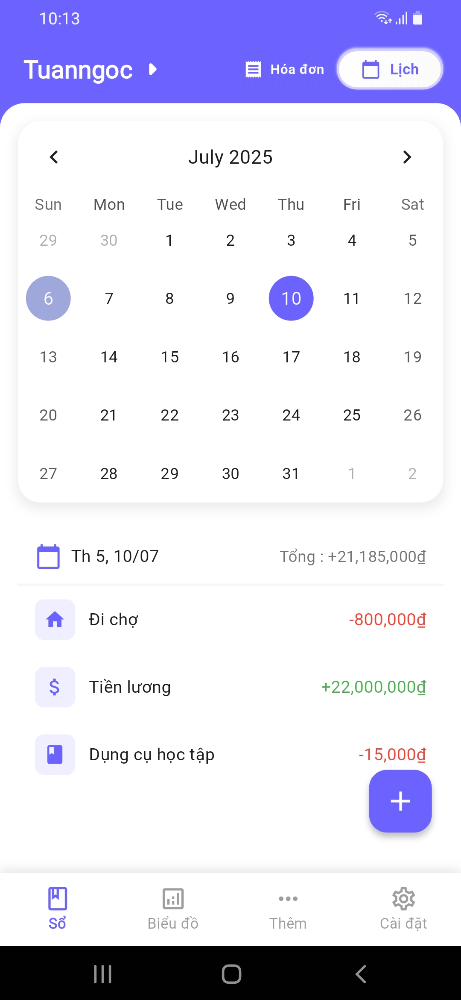
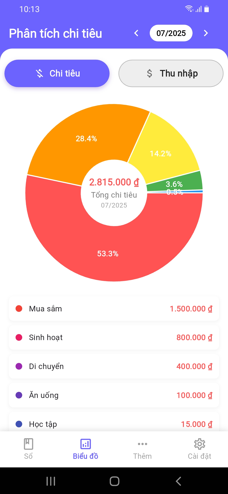
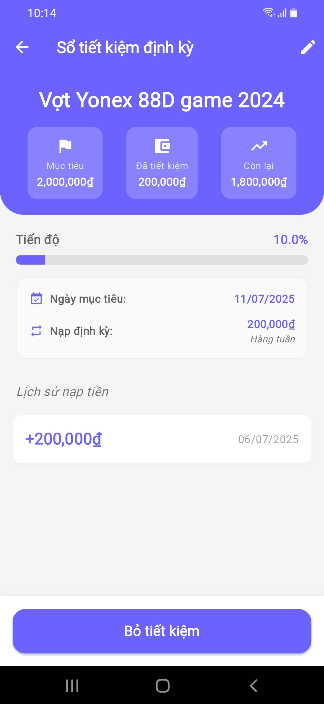
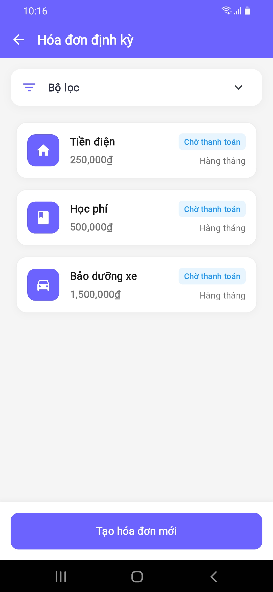
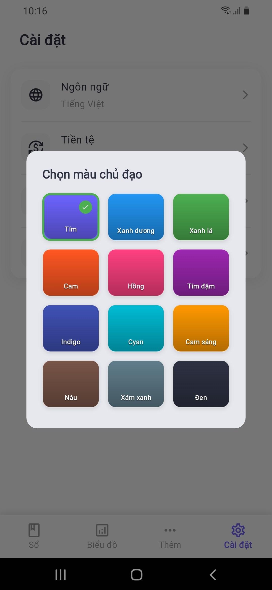

Platform
Flutter Mobile App
Cross-platform architecture for Android-first delivery.
Executive summary of product scope and delivery profile.
Flutter Mobile App
Cross-platform architecture for Android-first delivery.
6+ Features
Books, transactions, analytics, savings, notifications, language.
Material Design 3
Consistent responsive UI with dark and light theme support.
Google Play
Production release pipeline with published mobile artifact.
Professional summary section for CV artifact and interview walkthrough.
FinTrack is a personal finance management application developed with Flutter, helping users track income and expenses, manage accounting books, set savings goals, and analyze spending effectively.
The product combines transaction control, visual analytics, and proactive savings workflows.
Key application screens used as visual proof for CV and portfolio artifacts.





